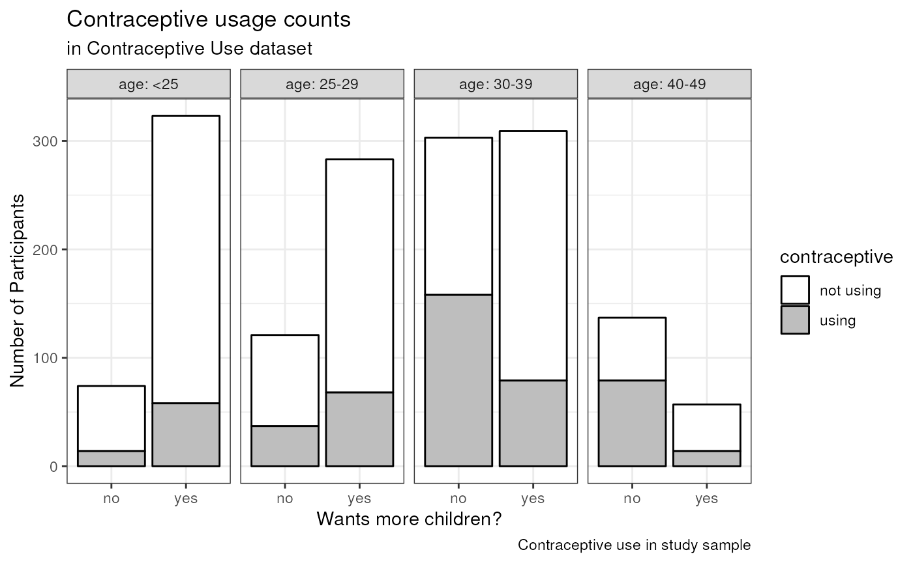

vignettes/session_lab.Rmd
session_lab.RmdLearning Objectives
table1 packageggplot2
packageExercises
Load the data from http://data.princeton.edu/wws509/datasets/#cuse. From this page:
These data show the distribution of 1607 currently married and fecund women interviewed in the Fiji Fertility Survey, according to age, education, desire for more children and current use of contraception.
Unlike in the lecture, here I demonstrate reading the dataset using
the readr package. It identifies some warnings because the
header of this file has extra spaces at the end which appear like an
extra column, making it appear like the dataset has 6 columns instead of
5. But the dataset reads with 5 columns as we want it to anyways,
because I chose to skip the blank column 6 in the graphical interface
(which added the code X6 = col_skip() below).
readr is good for identifying problems like this in text data
files.
# traditional method for loading data:
# cuse <- read.table("cuse.dat", header=TRUE)
# Using readr package with "File - Import Dataset" and manually setting factor levels.
# Note, you don't have to write all this code by hand! It was produced by the File - Import Dataset helper.
library(readr)
library(readr)
cuse <-
read_table(
"cuse.dat",
col_types = cols(
age = col_factor(levels = c("<25", "25-29", "30-39", "40-49")),
education = col_factor(levels = c("low", "high")),
wantsMore = col_factor(levels = c("no", "yes")),
X6 = col_skip()
)
)## Warning: Missing column names filled in: 'X6' [6]## Warning: 16 parsing failures.
## row col expected actual file
## 1 -- 6 columns 5 columns 'cuse.dat'
## 2 -- 6 columns 5 columns 'cuse.dat'
## 3 -- 6 columns 5 columns 'cuse.dat'
## 4 -- 6 columns 5 columns 'cuse.dat'
## 5 -- 6 columns 5 columns 'cuse.dat'
## ... ... ......... ......... ..........
## See problems(...) for more details.Note, these warnings relate to the presence of an empty column in the
dataset, which I dropped using X6 = col_skip()
problems()
summary(cuse)## age education wantsMore notUsing using
## <25 :4 low :8 no :8 Min. : 8.00 Min. : 4.00
## 25-29:4 high:8 yes:8 1st Qu.: 31.00 1st Qu.: 9.50
## 30-39:4 Median : 56.50 Median :29.00
## 40-49:4 Mean : 68.75 Mean :31.69
## 3rd Qu.: 85.75 3rd Qu.:49.00
## Max. :212.00 Max. :80.00Here’s a simple way to create the summary table that is required for your assignments, and for any epidemiological analysis you do. The text format is fine, and convenient for moving into another pubication or presentation document. See the table1 vignette for more examples.
WARNING: the counts in this table are incorrect, because each row corresponds to a number of counts of women using and not using contraceptives. We do this just to demo the table1 package, then make a correct table below after reshaping this dataset.
| Overall (N=16) |
|
|---|---|
| age | |
| 4 (25.0%) | |
| 25-29 | 4 (25.0%) |
| 30-39 | 4 (25.0%) |
| 40-49 | 4 (25.0%) |
| education | |
| low | 8 (50.0%) |
| high | 8 (50.0%) |
| wantsMore | |
| no | 8 (50.0%) |
| yes | 8 (50.0%) |
| notUsing | |
| Mean (SD) | 68.8 (56.3) |
| Median [Min, Max] | 56.5 [8.00, 212] |
| using | |
| Mean (SD) | 31.7 (25.5) |
| Median [Min, Max] | 29.0 [4.00, 80.0] |
Table 1: characteristics of the contraceptive use dataset. Note, these counts correspond to number of rows in the dataset, not numbers of participants
Excerpted from the seminal paper by Hadley Wickam
Happy families are all alike; every unhappy family is unhappy in its own way - Leo Tolstoy
To summarize, in tidy data: 1. Each variable forms a column. 2. Each observation forms a row. 3. Each type of observational unit forms a table.
Messy data is any other arrangement of the data. (according to Hadley and the tidyverse!)
First let’s do some work on the data to get it in shape for plotting.
I do these one step at a time to show what’s happening, but you could
also do chain these steps all together using the pipe operator
(%>%).
First, group by age and whether the participant reports wanting more children, and sum the number wanting or not wanting more children in each of these groups. Also rename “notUsing” to “not using” to make a nicer legend later.
library(tidyverse)
cusebyage0 <- group_by(cuse, age, education, wantsMore) %>%
summarise(using = sum(using), "not using" = sum(notUsing))
print(cusebyage0)## # A tibble: 16 × 5
## # Groups: age, education [8]
## age education wantsMore using `not using`
## <fct> <fct> <fct> <dbl> <dbl>
## 1 <25 low no 4 10
## 2 <25 low yes 6 53
## 3 <25 high no 10 50
## 4 <25 high yes 52 212
## 5 25-29 low no 10 19
## 6 25-29 low yes 14 60
## 7 25-29 high no 27 65
## 8 25-29 high yes 54 155
## 9 30-39 low no 80 77
## 10 30-39 low yes 33 112
## 11 30-39 high no 78 68
## 12 30-39 high yes 46 118
## 13 40-49 low no 48 46
## 14 40-49 low yes 6 35
## 15 40-49 high no 31 12
## 16 40-49 high yes 8 8Next, pivot this into a longer table by putting the “using” and “not using” columns into a single column called “contraceptive”. This pivot is necessary to make the data “tidy”.
cusebyage <- pivot_longer(cusebyage0,
cols = using:"not using",
values_to = "n",
names_to = "contraceptive")
cusebyage## # A tibble: 32 × 5
## # Groups: age, education [8]
## age education wantsMore contraceptive n
## <fct> <fct> <fct> <chr> <dbl>
## 1 <25 low no using 4
## 2 <25 low no not using 10
## 3 <25 low yes using 6
## 4 <25 low yes not using 53
## 5 <25 high no using 10
## 6 <25 high no not using 50
## 7 <25 high yes using 52
## 8 <25 high yes not using 212
## 9 25-29 low no using 10
## 10 25-29 low no not using 19
## # ℹ 22 more rowsWe can finally make a correct table1 with one more
transformation, uncounting on the n column (using the tidyr
package again). Also, we use label from the
table1 package to make more informative and readable
labels. For interest, this time we stratify based on wanting more
children, and add a caption. See ?table for more
options.
cuseverylong <- uncount(cusebyage, n) #from the tidyr package
label(cuseverylong$age) <- "Age (years)"
label(cuseverylong$education) <- "Education level"
label(cuseverylong$wantsMore) <- "Wants more children?"
label(cuseverylong$contraceptive) <- "Using contraceptives?"
table1(~ . | wantsMore, rowlabelhead = "Wants more children?",
caption = "Table 1: Participants in the contraceptive use study",
data = cuseverylong)| Wants more children? | no (N=635) |
yes (N=972) |
Overall (N=1607) |
|---|---|---|---|
| Age (years) | |||
| 74 (11.7%) | 323 (33.2%) | 397 (24.7%) | |
| 25-29 | 121 (19.1%) | 283 (29.1%) | 404 (25.1%) |
| 30-39 | 303 (47.7%) | 309 (31.8%) | 612 (38.1%) |
| 40-49 | 137 (21.6%) | 57 (5.9%) | 194 (12.1%) |
| Education level | |||
| low | 294 (46.3%) | 319 (32.8%) | 613 (38.1%) |
| high | 341 (53.7%) | 653 (67.2%) | 994 (61.9%) |
| Using contraceptives? | |||
| not using | 347 (54.6%) | 753 (77.5%) | 1100 (68.5%) |
| using | 288 (45.4%) | 219 (22.5%) | 507 (31.5%) |
Note, there are at least several other packages for making the epi “Table 1”. Take a look to see if any of them appeal to you: * desctable: powerful, provides a “download Excel” button in html output. * kableExtra: very powerful and flexible for formatting and features. Requires a little more code to get to your table 1. * tableone: simple and text-based, but works quite well and has options for exporting to Excel for use in a manuscript.
See the Data Visualization with ggplot2 Cheatsheet for help on enhancing this barplot.
Now, make a sort of fancy greyscale barplot using ggplot2. You can make a nice plot without using nearly so many options, but I want to demonstrate the flexibility of making a bar plot with ggplot2.
ggplot(cusebyage, aes(x = wantsMore, weight = n, fill = contraceptive)) +
# create a stacked bar plot, where the values provided are counts/frequencies,
# and use black outlines for the bars.
geom_bar(position = "stack", stat = "count", color = "black") +
# use facet_grid to separate the plots by age group
facet_grid(.~age, labeller = label_both) +
labs(title = "Contraceptive usage counts",
subtitle = "in Contraceptive Use dataset",
caption = "Contraceptive use in study sample") +
xlab("Wants more children?") +
ylab("Number of Participants") +
# there are lots of scale_fill_* options for automatic color schemes, but I
# just want to specify the colors manually here.
scale_fill_manual(values=c("white", "grey")) +
theme_bw()
Figure 1: contraceptive use in the study sample. Bar
plot is organized by age group and stacked by self-report of whether
participant wants more children. The fraction of women wanting more
children decreases with age, becoming a minority in the 40-49 age group.
One unexpected observation in this bar chart is that in the <25 age
group, those reporting wanting more children appear more likely
to report using contraceptives. Is this the case? One way to make this
more visually clear would be to use percentages, instead of counts, on
the vertical scale. Try this, by changing weight = n to
weight = percent to use the “percent” column as heights
instead of the “n” column. While you’re at it, change the y label to
reflect this change.
Note: The caption option in ggplot2 is suitable for smaller, embedded captions. But for publication the caption usually needs to be in separated text.
Here’s some code to calculate the percentages.
## # A tibble: 32 × 6
## # Groups: age, wantsMore [8]
## age education wantsMore contraceptive n percent
## <fct> <fct> <fct> <chr> <dbl> <dbl>
## 1 <25 low no using 4 5.41
## 2 <25 low no not using 10 13.5
## 3 <25 low yes using 6 1.86
## 4 <25 low yes not using 53 16.4
## 5 <25 high no using 10 13.5
## 6 <25 high no not using 50 67.6
## 7 <25 high yes using 52 16.1
## 8 <25 high yes not using 212 65.6
## 9 25-29 low no using 10 8.26
## 10 25-29 low no not using 19 15.7
## # ℹ 22 more rowsNow, can you repeat the barplot, but showing percentages instead of counts?